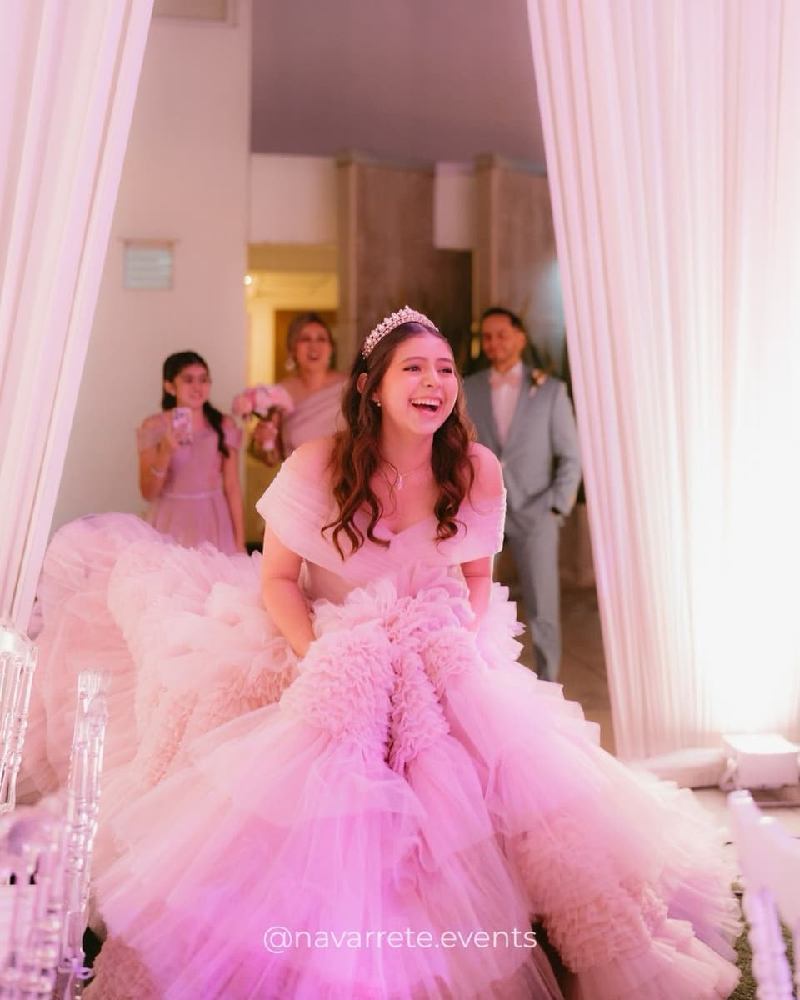

Quinceañera Cielo
A boutique in pink
A neon-lit dressing room, draped ceilings and cherry blossoms.
- Celebration
- Quinceañera
- Photographs
- 14
Concept
A boutique concept carried through the whole celebration. A neon-lit dressing room bearing her initial welcomes the guests; in the room, draped ceilings, cherry-blossom branches, white round tables and a dance floor with a projected monogram keep the palette in an enveloping, luminous pink.
Design elements
- 01 Neon dressing room
- 02 Draped ceilings
- 03 Cherry blossoms
- 04 Projected monogram
- 05 White tables
Imagining something with this level of detail?
Tell us about your celebration. Every project begins with a conversation.
